Hello there!
Reinforcing
your blocks
A practical guide to UI component testing
📝 Overview
- Why testing is useful
- The component
- Testing demos
🧪 What is testing and why is it useful
UI component architecture

UI component are functions
Component usage
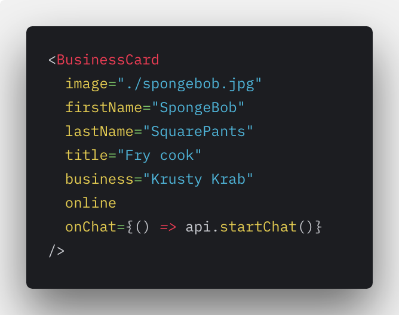Component output
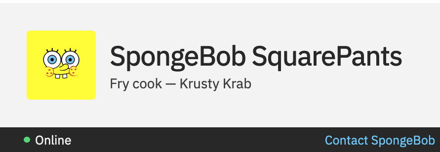Ensure output is of component correct
What can I possibly do to break this component?
The Business Card component
Default variation
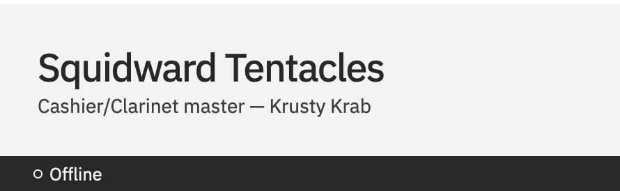Fully-featured variation
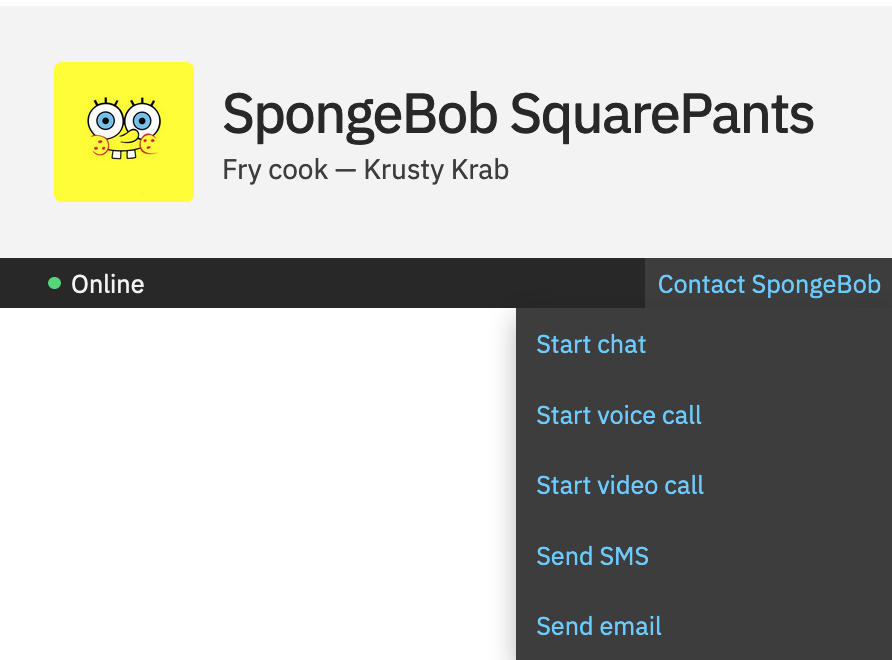UI testing pillars
- Manual visual tests (CSS)
- Structure tests (HTML)
- Interaction tests (Javascript)
- Accessibility
Manual visual tests (CSS)
Introducing storybook
Adding a story
BusinessCard.stories.js
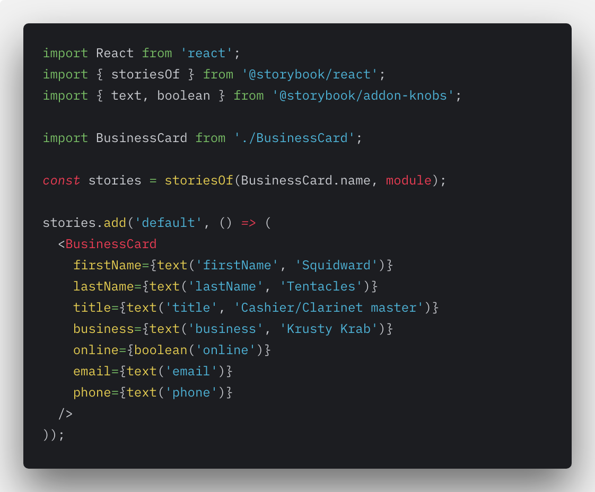
Output
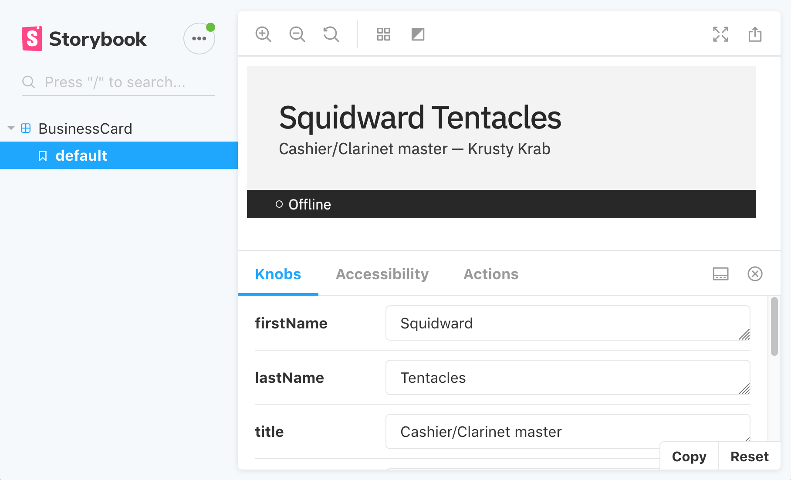
Why not automated testing?
Visual regression tests are challenging and fragile
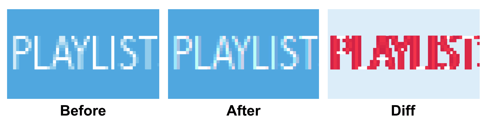Key points of visual tests
- Use Storybook on your project
- Create stories for as many variations as makes sense
- Learn more about visual regression testing
Structure tests (HTML)
Introducing jest
demo.test.js
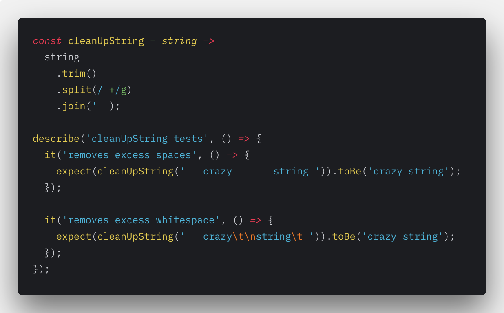
npm run test demo.test.js
Render test
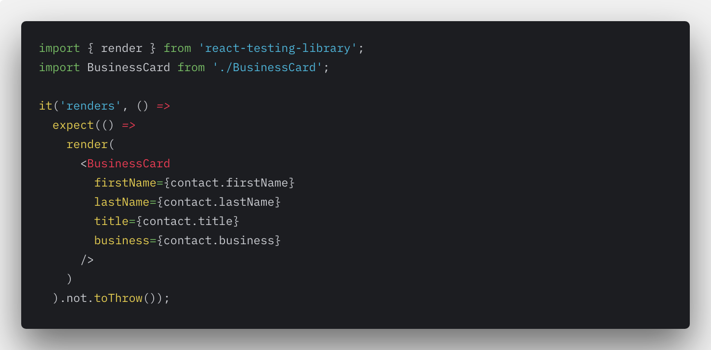Basic structure test
BusinessCard.test.js
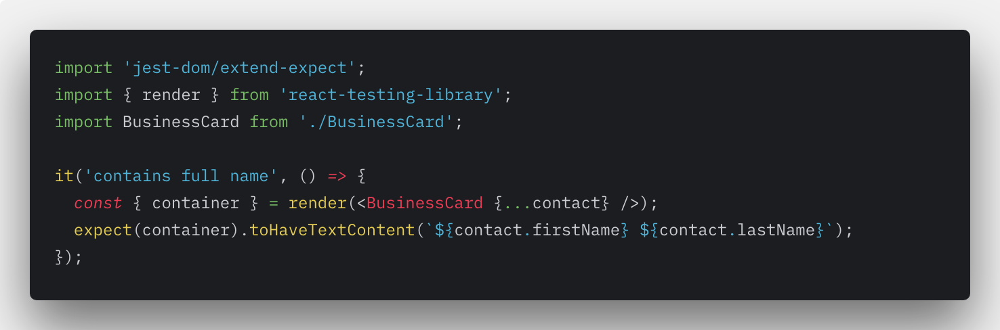
What is tested
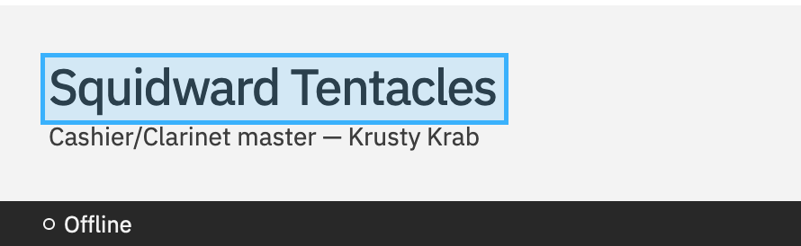
Conditional structure tests
BusinessCard.test.js
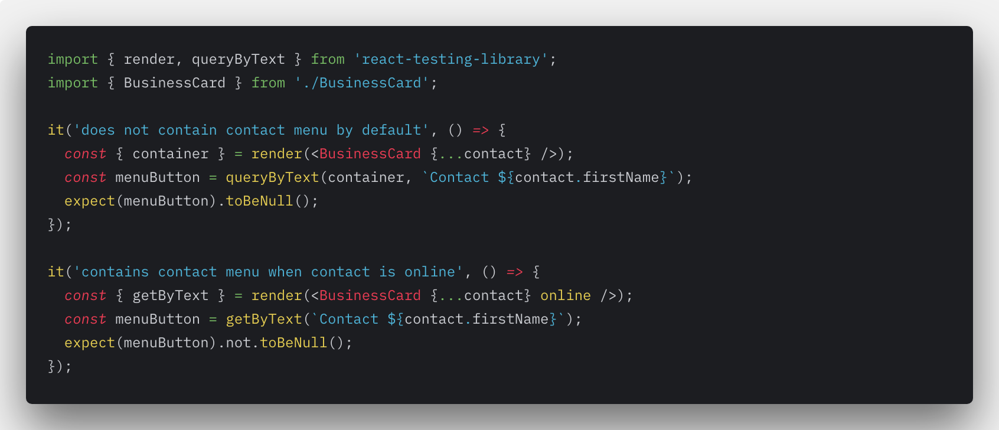
What is tested
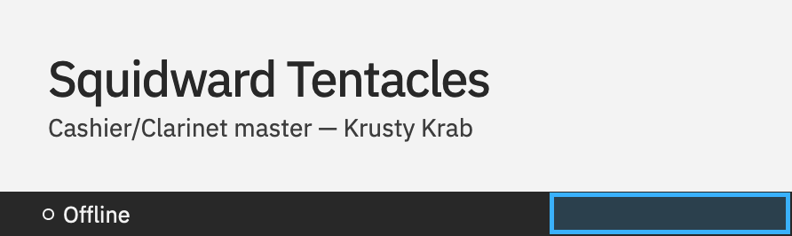
Conditional content tests
BusinessCard.test.js
Using data-testid attribute
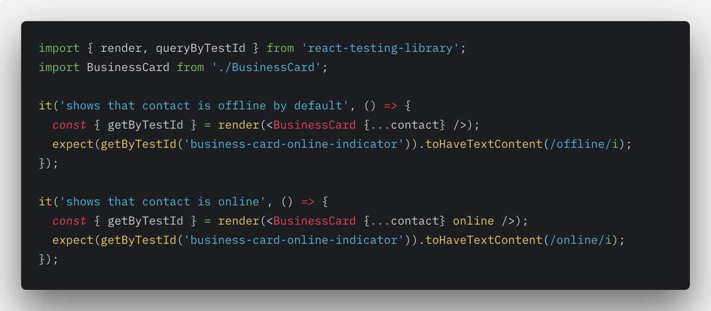
What is tested
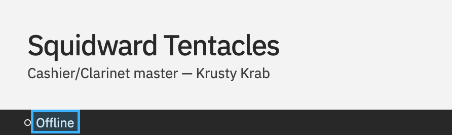
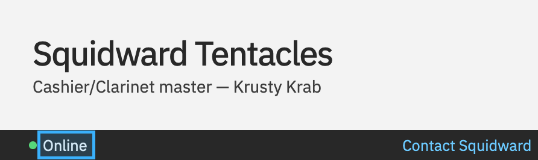
Snapshot tests
BusinessCard.test.js
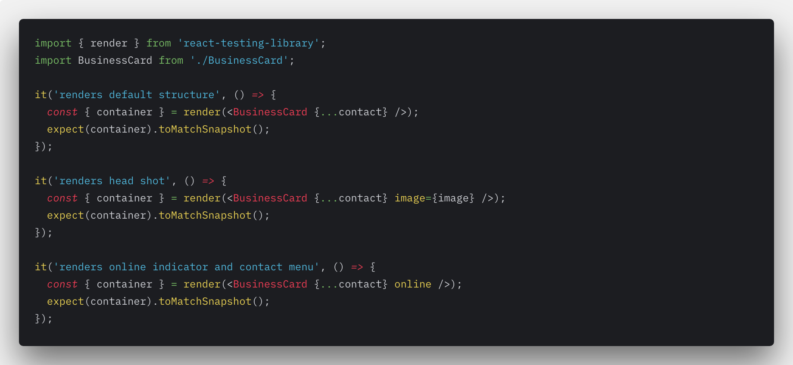
Generated snapshot
exports[`BusinessCard Structure - Snapshots renders default structure 1`] = `
Squidward Tentacles
Cashier/Clarinet master — Krusty Krab
`;
Snapshot test failure
Key points of structure tests
- Look for variations based on props to test
- Use snapshots, with caution
- Always review snapshot changes
Interaction tests (Javascript)
Storybook actions addon
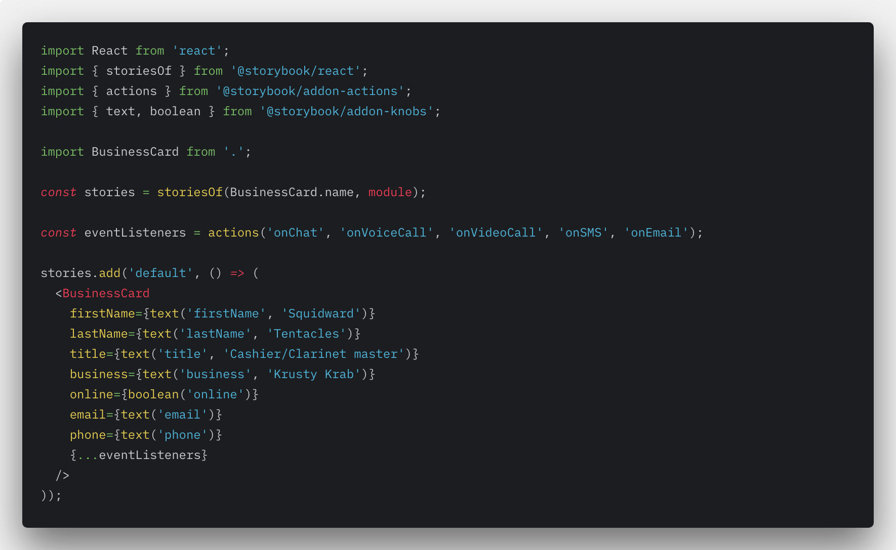Simulating user behavior
With fireEvent from React Testing Library
Testing callback props
With jest.fn() mocks
Key points of interaction tests
- Look for all event listeners and test their behavior
- Learn more about Jest mocks and spies
Accessibility
Only ~30% of accessibility defects are discovered through automated testing tools
Automatic semantic tests
Using jest-axe
Automatic-ish visual tests
Using @storybook/addons-a11y
Key points of accessbility tests
- Adding accessibility tests is not as difficult
- Variety of testing tools can make accessbility tests more complete
Conclusion
- Testing your code will help you find and fix bugs sooner
- UI tests can be broken down to: structure, visual, interaction, and accessbility tests
- Use snapshots with responsibility